INTRODUCCIÓN:
Durante el desarrollo de un videojuego es muy útil, o incluso necesario si se trata de un gran proyecto, disponer de un menú del programador que nos permita comprobar y modificar determinados valores de nuestro programa. Un claro ejemplo de estos menús lo podemos encontrar en varios juegos de Microcabin como el Illusion City, The Tower of Gazzel, Xak, etc... Konami no parece que los usase mucho, o al menos no los dejaba en las versiones definitivas de sus programas, que se sepa. Sin embargo parece que con el Metal Gear 2: Solid Snake hicieron una excepción (en parte).
CÓMO SE ACCEDE AL MENÚ:
A este tipo de menús se accede normalmente mediante una combinación de teclas, un password o algo así. Pero ese no es nuestro caso; a pesar de que el cartucho contiene el menú, no hay manera 'legal' de acceder a él, porque el programador lo anuló en el último momento poniendo un RET (una instrucción de código máquina que nos indica que una rutina ha terminado) justo al comienzo del menú, impidiendo de esta forma su ejecución. Así que la única forma de hacerlo es "a lo bestia", quitando ese RET del programa (Hay otras formas de hacerlo, pero en todas hay que modificar de una u otra manera el codigo original).
MODIFICAR LA ROM:
La rutina que nos interesa se encuentra en la última página del cartucho (#3F) en la posición #B800, y basta con poner un 0 (NOP) en #B801, lugar donde se encuentra el RET. Se puede hacer directamente sobre un cartucho que contenga la ROM, como puede ser una MegaRAM o un ESE SCC Disk, o bien sobre el propio fichero ROM con un editor hexadecimal (offset #7F801).
Aquí está la ROM para los que no se hacen cargo: Metal Gear 2 (Inglés)
Nota: No se puede hacer sobre la versión en disco de Martos (ni sobre las traducciones basadas en ella), ya que esas rutinas fueron quitadas al hacer la conversión.
EL MENÚ:
Si todo ha ido bien, al ejecutar la ROM dispondremos de una serie de opciones en función de la tecla que pulsemos:
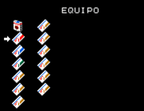 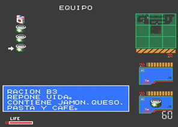 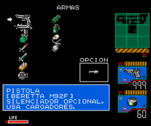 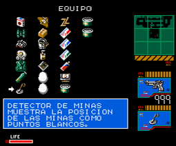 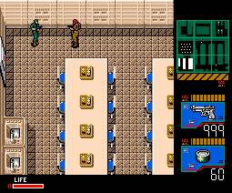 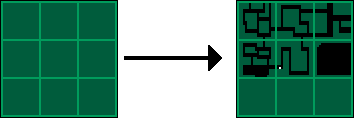 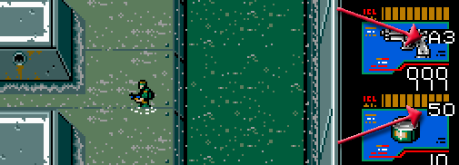 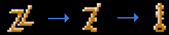 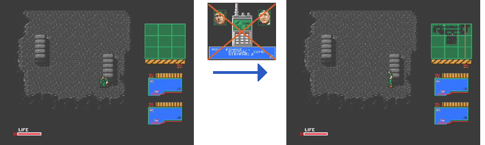 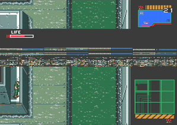 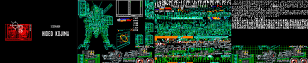 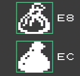
Tecla
Descripción
Todas las
tarjetas.
Todas las ratio. Los
tres tipos con 20, 40 y 60 unidades respectivamente.
Todas las armas con
munición al máximo y todos los objetos.
Modo invisible: Ni los
guardas ni las cámaras pueden vernos, pero si los tocamos nos descubrirán
y podrán vernos hasta que pase la alarma.
Desactiva modo
invisible.
Conoces el camino de la
selva sin tener que seguir al boina verde.
Muestra las coordenadas
de Snake.
Sube un nivel (Max. 8).
No se ve reflejado en la barra de energía.
Baja un
nivel.
Ver final del
juego.
Provoca que el broche de
Natasha se transforme en la llave del armario del Dr. Petrovich Madnar. Si
el broche está seleccionado no se producirá la transformación.
Se salta la primera
parrafada de Roy Kyanbel, en la que nos explica la misión.
2 (teclado
numérico)
Nos desplaza una
pantalla hacia abajo.
4 (teclado
numérico)
Nos desplaza una
pantalla hacia la izquierda.
6 (teclado
numérico)
Nos desplaza una
pantalla hacia la derecha.
8 (teclado
numérico)
Nos desplaza una
pantalla hacia arriba.
STOP
Detiene el juego y entra
en STOP MODE
Mueve la pantalla hacia
arriba.
Mueve la pantalla hacia
abajo.
Cambia la página
visualizada.
Muestra en la zona de
arma/objeto los sprites actualmente usados, mediante cursor ARRIBA y
ABAJO.
Aparece un punto que nos
permitirá saber las coordenadas de un determinado lugar de la pantalla. Se
mueve con los cursores.
Salir del STOP
MODE.
0
Inicio
juego
1
Edificio 1 -
1F
2
Edificio 1 - 2F (hay que
desplazarse una pantalla arriba)
3
Edificio 1 -
3F
4
Edificio 1 -
4F
5
Edificio 1 - B1 (hay que
desplazarse una pantalla arriba)
6
Edificio 1 - B2 (hay que
desplazarse una pantalla arriba)
7
Selva
8
Edificio 1 -
B3
9
Edificio 2 - Parte sur
(Entrada)
A
Edificio 2 - Parte
norte
B
Edificio 2 - 1F (hay que
desplazarse una pantalla arriba)
C
Edificio 2 -
xF
D
Edificio 2 -
xF
E
Edificio 2 -
xF
F
Puerta azotea (hay que
desplazarse una pantalla arriba)
Edificio 2 -
xF
Selva final de
juego
Frente al Metal
Gear
Barracones -
B1
Nota: Dependiendo del modelo de ordenador algunas teclas pueden no coincidir con las anteriormente citadas. Por ejemplo en un turbo R para ver el final hay que pulsar ^ y no =